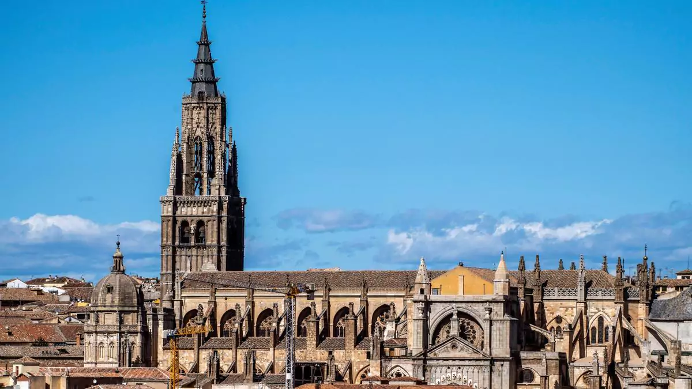
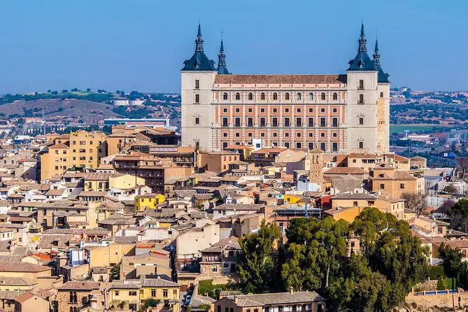
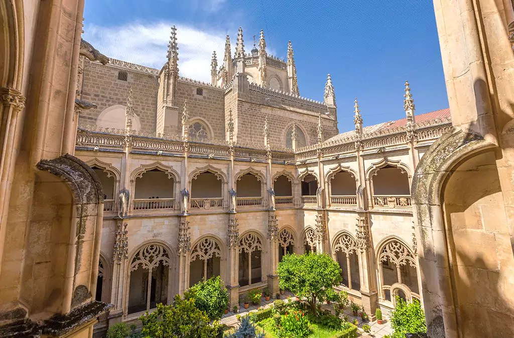
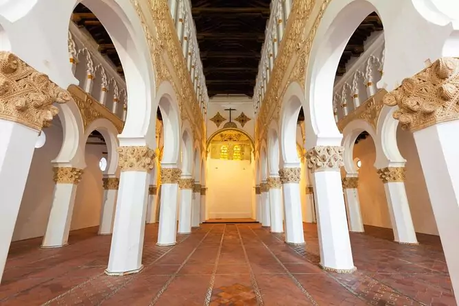
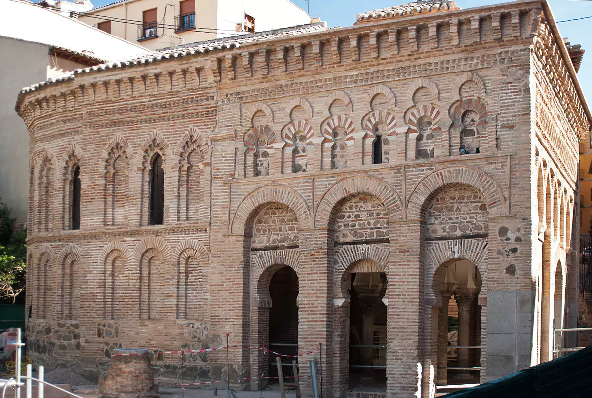
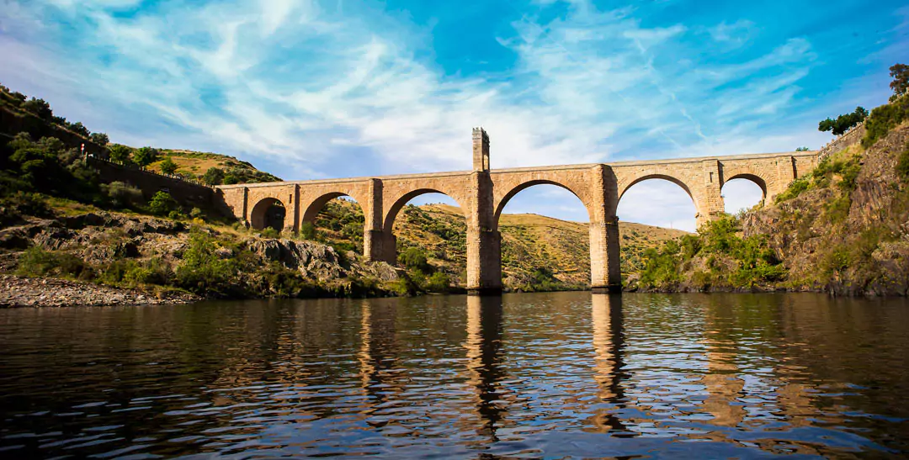
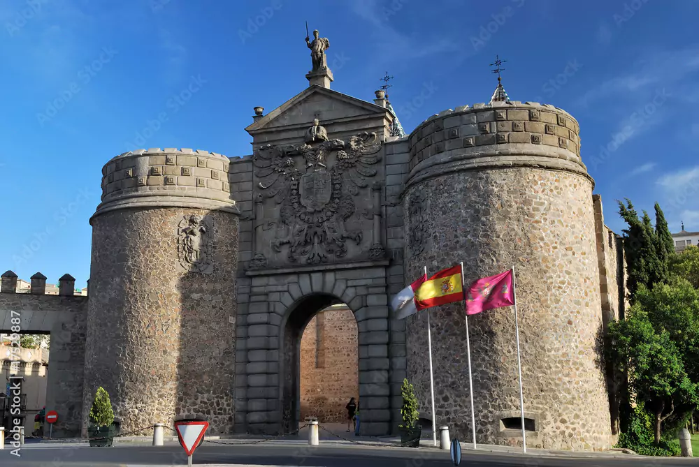
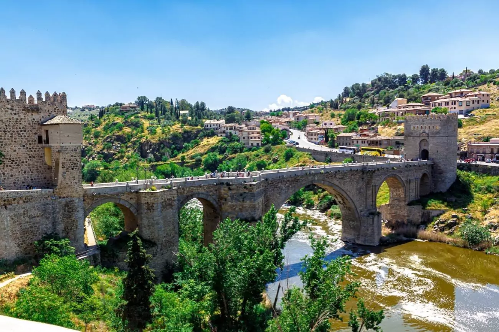

Historical sites of Toledo
-
Toledo Cathedral
A masterpiece of Gothic architecture, this cathedral is one of the most significant religious buildings in Spain, featuring a vast collection of art and impressive chapels.
-
Alcazar of Toledo
A prominent fortress that has played various roles throughout history, including as a Roman palace and a military academy. It now houses the Army Museum.
-
Monastery of San Juan de los Reyes
Commissioned by the Catholic Monarchs, this monastery is a prime example of Isabelline Gothic architecture, notable for its stunning cloisters and decorative elements.
-
Synagogue of Santa Maria la Blanca
Originally built in the 12th century as a synagogue, this building is an exquisite example of Mudejar architecture, reflecting the city's Jewish heritage.
-
Mosque of Cristo de la Luz
A former mosque from 999 AD, later converted into a church, showcasing Islamic architectural influences with its horseshoe arches and intricate decoration.
-
Puente de Alcantara
A Roman bridge spanning the Tagus River, significant for its engineering and historical importance. It was built around 103 AD.
-
Puerta de Bisagra
A monumental city gate of Moorish origin, rebuilt in the 16th century, serving as a grand entrance to the old city.
-
Puente de San Martin
A medieval bridge over the Tagus River, notable for its five arches and scenic views of the city. It was built during the 13th century.